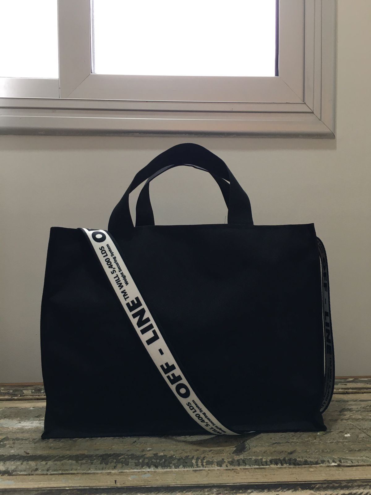
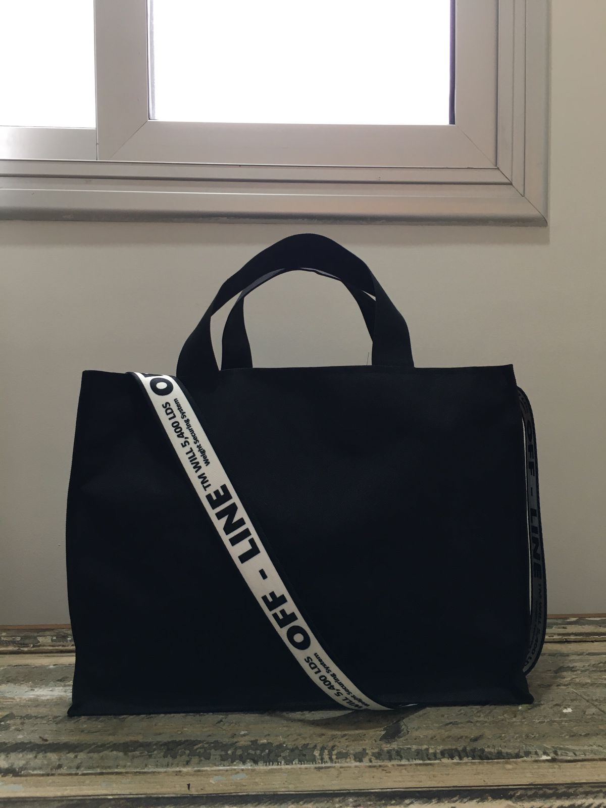

¿Quienes Somos?
"Tota Martìnez nace a mediados del 2020, luego de haber quedado desempleada de un día para el otro. Ante la necesidad de dinero y poniendo en práctica mis estudios en corte y confección, incursioné en el mundo de la ropa hasta que me di cuenta que lo mio era hacer carteras. Y en ese momento se me ocurrió lanzar un emprendimiento propio que lleva el nombre de "Tota Martínez" en honor a mi abuela que siempre me enseñó a luchar por los sueños. Luego de generar el diseño, conseguir las telas que quería y los profesionales necesarios, me lancé al mercado en Septiembre de ese mismo año y desde entonces, cada bolso vendido es una persona más a la que llega mi Tota y su inexorable ideal de los sueños cumplidos" - Eliana Vaccaro, creadora de Tota Martìnez
 
